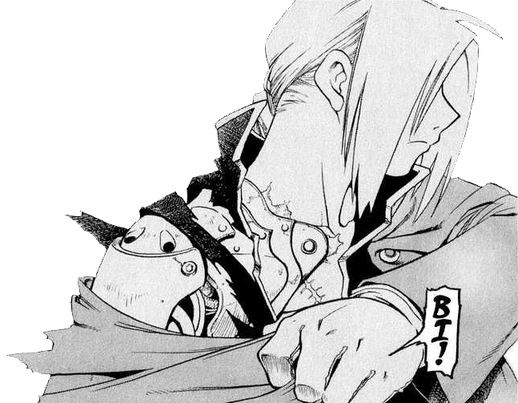
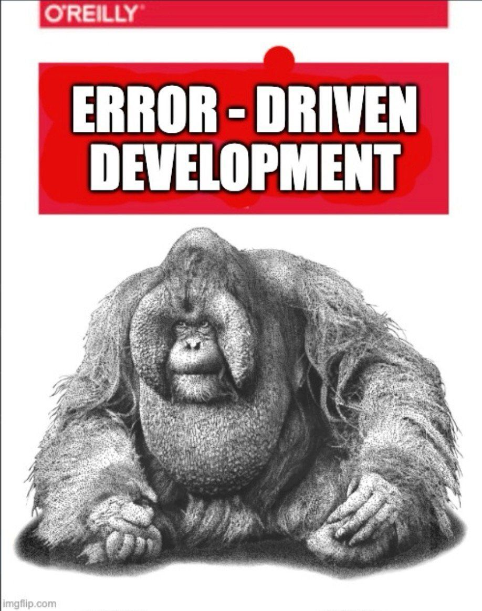
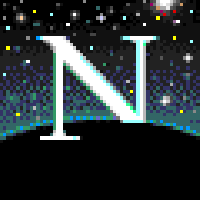
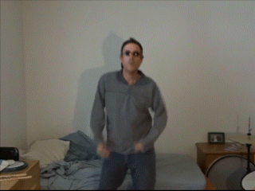
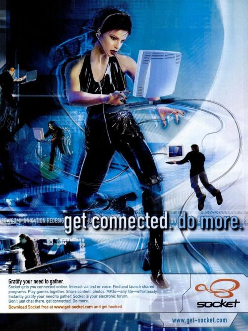
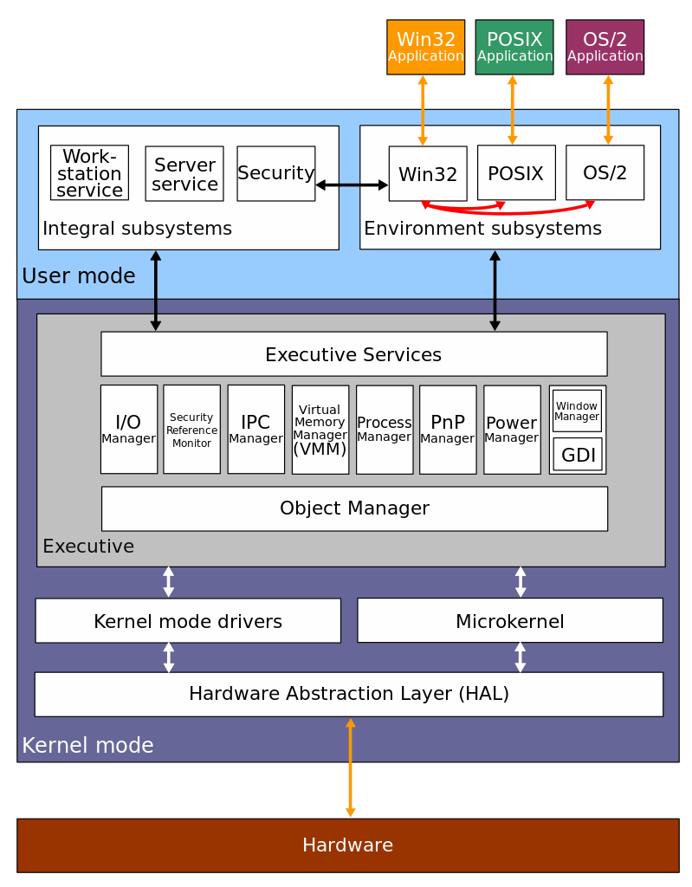
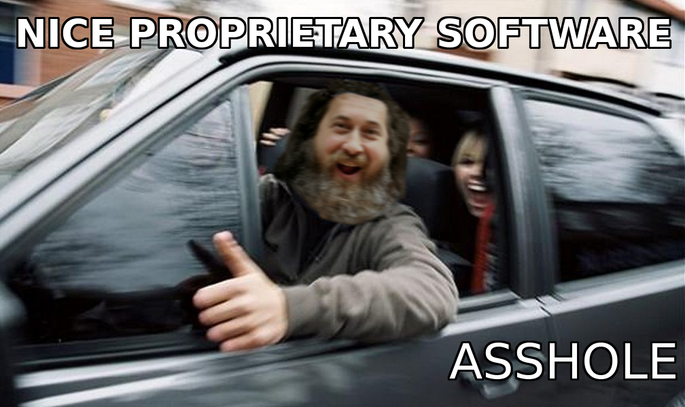

>>START HERE<<
>>START HERE<<
No gaming allowed
- cache line size matters because fetching memory outside a cache line is slow the CPU reads memory in chunks usually 64 bytes wide when a data structure spans across two lines the CPU fetches both lines causing latency keep structures within a cache line for speed memory bus width is the number of bits transferred in one operation wider buses mean faster access but misaligned data may split across transfers wasting cycles modern CPUs optimize for specific alignment use aligned malloc for better performance data packing happens when structs have padding the compiler adds bytes to align fields on word boundaries for fast access packing fields tightly with #pragma pack removes padding but may slow access due to misalignment always balance between tight packing and proper alignment early error handling in C is crucial errors propagate fast the longer they go unhandled check return values of functions and fail early it avoids cascading failures program termination should be clean exit codes matter zero means success non-zero indicates failure the caller can check this keep exit points in mind when designing functions use of asserts and debug logs help spot early failures zip zero initialization is a trick in C set memory to zero memset struct arrays before use to prevent uninitialized data bugs a common source of crashes pointer arithmetic is dangerous always check boundaries buffer overruns are fatal in C bounds checking is manual think carefully before using pointers inline functions can reduce overhead for small utility functions but don't inline everything too much inlining increases code size blowing up instruction cache branch prediction in CPUs is key for fast execution the CPU guesses where code will go if it guesses wrong the pipeline flushes causing delays arrange if-else conditions for predictable branches frequent cases should be at the top minimize unpredictable jumps
✨ kino video
- CHADMAN Confirmed: https://www.youtube.com/watch?v=TZ5a3gCCZYo
- https://www.youtube.com/watch?v=xt1KNDmOYqA
- https://www.youtube.com/watch?v=r9gRk-Px7l4&
- https://www.youtube.com/watch?v=m5wsfLeQxH4
- https://www.youtube.com/watch?v=IroPQ150F6c
😎 cool blogposts and channels
📸 cool pics






